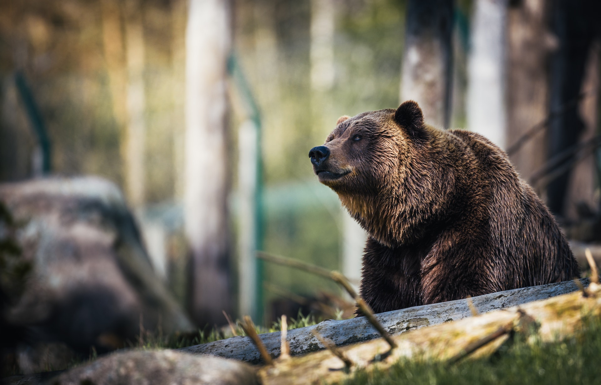
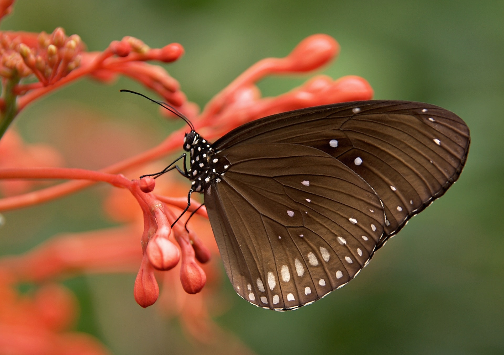

Discover every type of photography.

Images capturing the beauty of the great outdoors, beaches, forests, peaks and deserts, are all considered landscape photography.
Portrait photography includes any type of images focused on expressing people's expressions and personalities.

Wildlife photography is a genre of photography concerned with documenting various forms of wildlife in their natural habitat.

Macro photography is all about showcasing a subject larger than it is in real life — an extreme close-up of something small.
Photography is a way of feeling, of touching, of loving. What you have caught on film is captured forever... it remembers little things, long after you have forgotten everything.
-Aaron Siskind